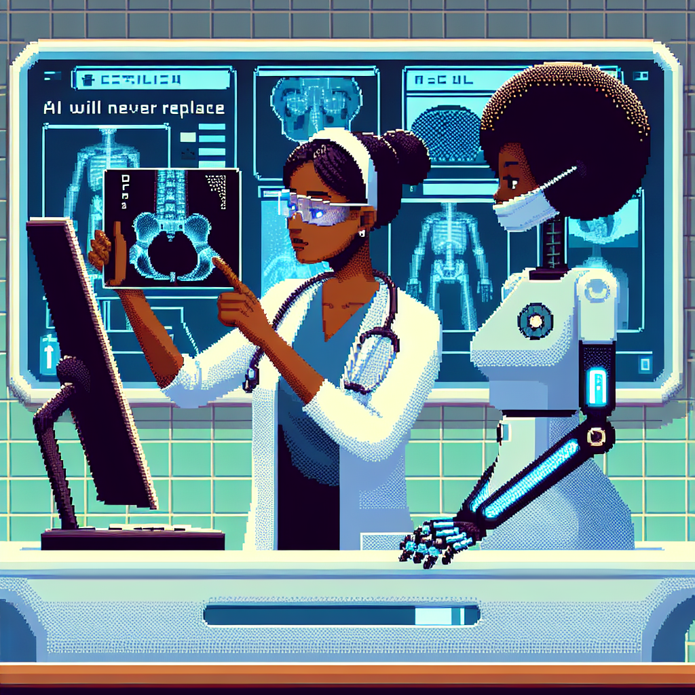

Why AI will never replace the radiologist
**Why AI Will Never Replace the Radiologist**
In recent years, artificial intelligence (AI) and machine learning have made significant strides in various fields, including healthcare. As a Python instructor who specializes in machine learning, I am often asked whether AI will eventually replace radiologists in their crucial roles. While AI has the potential to enhance radiology practices, I firmly believe that it will never fully replace the human touch in this field. In this post, I will outline the reasons why radiologists will continue to be an indispensable part of healthcare, despite the advancements in AI.
### 1. The Complexity of Human Anatomy
Radiology is a complex field that requires a deep understanding of human anatomy, pathology, and the nuances of medical imaging. While AI algorithms can analyze images and identify patterns, they often lack the comprehensive knowledge that a radiologist possesses. Radiologists can contextualize findings based on patient history, clinical symptoms, and other diagnostic tests, which is something AI currently cannot replicate.
### 2. The Art of Interpretation
Radiology is not just about identifying abnormalities; it's also about interpreting them in the context of each individual patient. A radiologist must consider various factors, such as age, medical history, and comorbidities, when making a diagnosis. AI can assist in this process by highlighting areas of concern, but it cannot replace the nuanced interpretation that comes from years of training and experience.
### 3. Ethical Considerations
The use of AI in healthcare raises significant ethical issues. Decisions about patient care should involve human judgment, especially when it comes to serious diagnoses and treatment options. Radiologists play a critical role in discussions with patients and referring physicians, providing insights and recommendations that are informed by their clinical expertise. The human element in these conversations is irreplaceable.
### 4. Continuous Learning and Adaptation
The field of medicine is constantly evolving, with new research, techniques, and technologies emerging regularly. Radiologists are trained to adapt to these changes and stay up-to-date with the latest advancements in their field. While AI can learn from data, it requires continuous updates and retraining to remain relevant. Radiologists bring a level of adaptability and critical thinking that AI cannot match.
### 5. Collaboration and Communication
Radiologists work as part of a healthcare team, collaborating with other physicians, surgeons, and specialists to provide comprehensive care to patients. Communication skills are essential in this collaborative environment, as radiologists must effectively convey their findings and recommendations. AI lacks the ability to engage in meaningful dialogue and foster relationships, which are vital components of patient care.
### Conclusion
In summary, while AI and machine learning are valuable tools that can augment the capabilities of radiologists, they will never replace the expertise, intuition, and interpersonal skills that human radiologists bring to the table. The future of radiology lies in a collaborative approach where AI assists radiologists in their work, allowing them to focus on what they do best—providing accurate diagnoses and compassionate patient care.
As we continue to explore the intersection of technology and medicine, it’s essential to remember that the human touch is irreplaceable. AI will serve as a powerful ally, but the role of the radiologist will remain crucial in delivering quality healthcare.